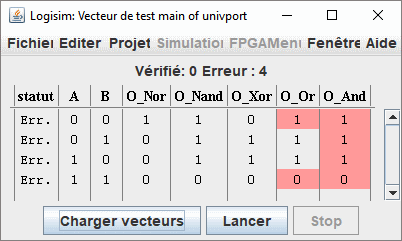

La fenêtre Vecteur de test
La fenêtre Vecteur de test est similaire à l'onglet Tableau de la fenêtre Journalisation. Vous pouvez charger un vecteur de test depuis un fichier, et Logisim commencera à exécuter des tests sur le circuit actuel. Comme la fenêtre de journalisation, il n'y a qu'une seule fenêtre de vecteur de test pour le projet, et le tableau changera pour refléter le circuit qui est simulé dans la fenêtre du projet. Notez cependant que le module Vecteur de test exécute une copie séparée du simulateur de circuit, et n'interfère donc pas avec, et n'est pas influencé par, la simulation dans la fenêtre du projet.
Pour l'exemple, nous testerons le circuit ci-dessous. Ce circuit donne les résultats de cinq fonctions logiques à partir de deux entrées. Il contient une erreur car la porte NAND du bas devrait être une porte AND.

Le fichier de vecteur de test ressemble à ceci :
A B O_Nor O_Nand O_Xor O_Or O_And O_AB[2] 0 0 1 1 0 0 0 00 0 1 0 1 1 1 0 01 1 0 0 1 1 1 0 10 1 1 0 0 0 1 1 11
Pour exécuter le test, sélectionnez le menu | Simuler |→| Vecteur de test | puis utilisez le bouton Charger le vecteur. Sélectionnez le fichier de vecteur que vous avez créé. La simulation est exécutée immédiatement et un tableau est affiché avec le résultat.

Toutes les sorties incorrectes seront signalées en rouge. Survolez la boîte rouge avec la souris pour voir ce que la sortie aurait dû être, selon le vecteur de test. Les lignes avec des sorties incorrectes sont triées en haut de la fenêtre.
Le format de fichier est simple. Vous pouvez utiliser le module Journalisation (avec "Inclure la ligne d'en-tête" sélectionné dans l'onglet de sortie de fichier) pour commencer, car dans la plupart des cas, le module Journalisation produit le même format que celui utilisé par le module Vecteur de test.
Interactive Test Execution
Each row in the Test Vector window has two buttons that allow you to manually interact with individual tests:
- "Show" button (first column): This button previews the circuit state without checking outputs.
- Combinational tests (seq=0): Resets the circuit, sets the input values, and propagates signals. Only the clicked row is highlighted in green to show it was executed.
- Sequential tests (seq>0): Resets the circuit, then runs all prior sequential steps in the set (from seq 1 up to the target step), propagating after each step. All executed sequential steps are highlighted in green to show the execution path.
- "Set" button (second column): This button sets input values and may execute tests.
- Combinational tests (seq=0): Resets the circuit, applies the test inputs, then propagates signals. Only the clicked row is highlighted in green to indicate it was executed.
- Sequential tests (seq>0): Does NOT reset the circuit and does NOT run any other tests. Simply sets the input values for that single step only, then propagates signals. Only the clicked row is highlighted in green. This allows you to manually step through a sequence by setting individual step values without resetting or running previous steps.
- For either button, if you turn off Auto-Propagation in the Simulation menu, it will not propagate the last step in the sequence (or the only step in the combinational test), stopping after setting the input pins. This allows you to single-step the circuit through the propagation of that line.
Highlighting behavior:
- When the Show button is clicked on a combinational test, only that single row is highlighted in green.
- When the Show button is clicked on a sequential test, all sequential steps (seq > 0) up to and including the target step are highlighted in green.
- When the Set button is clicked, only the clicked row is highlighted in green, regardless of whether it's combinational or sequential.
- Highlighting is cleared when a new vector file is loaded or when the circuit simulator is reset.
Précédent : Vecteurs de test | Suivant : Format de fichier vecteur de test.